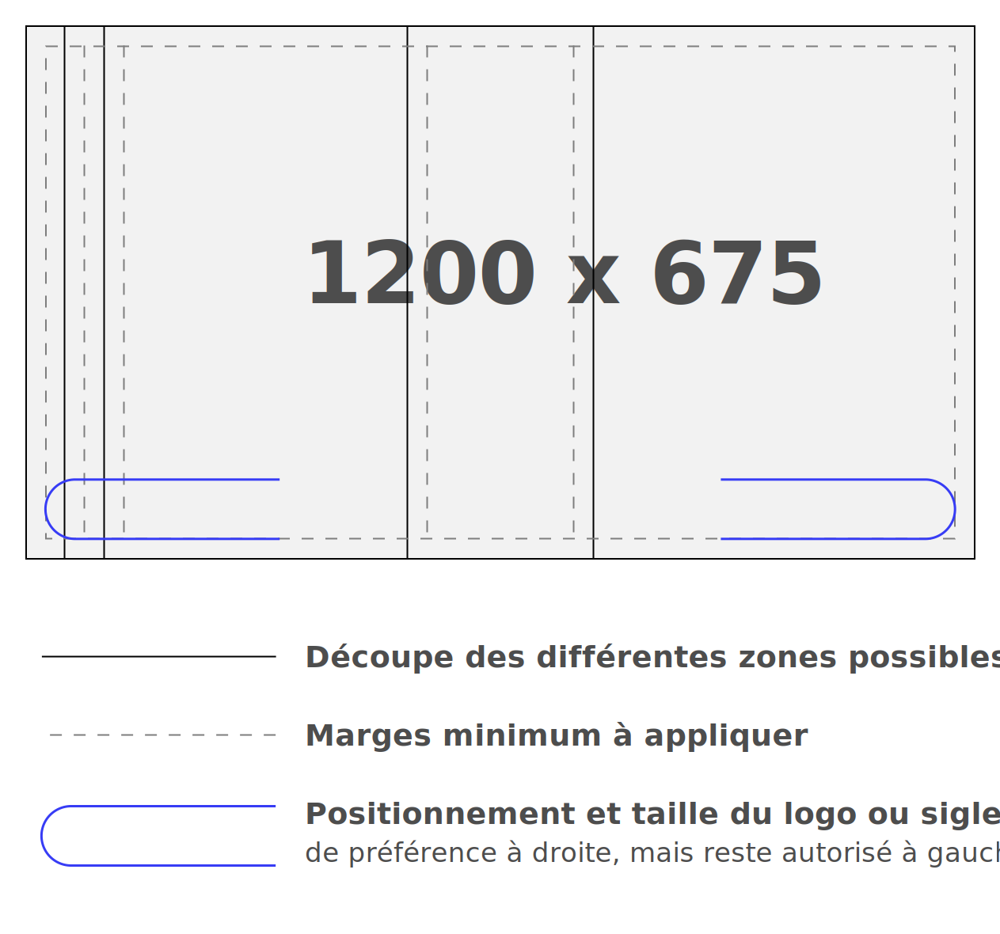
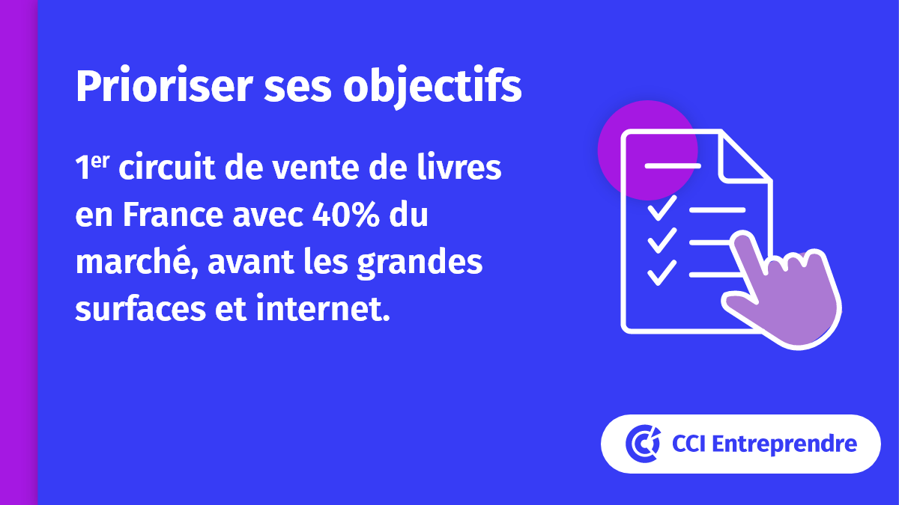

Charte Réseaux sociaux
Rappel
Les éléments pour les réseaux sociaux reprennent l'ensemble de l'environnement et des éléments visuels développés sur cette plate-forme.
Un outil est à votre disposition pour créer rapidement vos visuels pour les réseaux sociaux.
Template creatorImage profil & couverture
Fichiers sources
version .png / .jpg
TéléchargementFormats
Image
Le format image commun optimal convenant à la plupart des réseaux sociaux (Twitter/Facebook/LinkedIn) est de 1200 x 675.
Voici le gabarit sur lequel sont développés les templates 2020 de CCI France et qui est conseillé pour le réseau.

version .png / .svg
Fichier gabaritVidéo
2 formats peuvent utilisés en fonction du canal de diffusion
Fil d'actualité Facebook / Twitter / LinkedIn
Conseillé : Ratio 1:1
1200px * 1200px
Possible : Ratio 16:9
1920px * 1080px
Vidéo YouTube
Conseillé : Ratio 16:9
1920px * 1080px
Exemples de templates
Template Twitter
Style classique CCI
Style thématique

Fil Twitter avec les jeux de couleurs thématiques
Vignettes YouTube
Style classique CCI

Style développement durable

Style CCI entreprendre